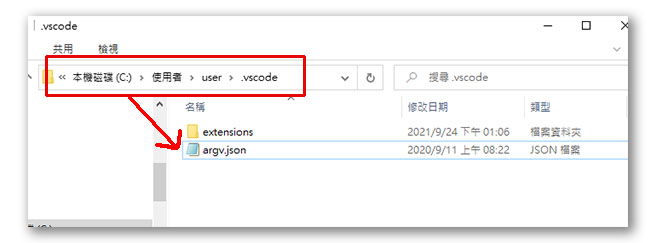

Visual Studio Code 程式碼編輯整合工具
VS Code為微軟推出的一個免費文字編輯器，因其內建多項對前端開發友善的功能加上內建套件市集，因此在短時間內普及，目前為許多網頁開發者首選的程式碼編輯器。
1.下載Visual Studio Code
首先，直接在瀏灠器上輸入關鍵字 vs code ，即可找到Visual Studio Code的官網或下載頁面：
點選首頁中的Download for Windows按鈕即可啟動下載

下載完成後會在瀏灠器左下方顯示下載完成提示：
2.執行安裝
在下載完成後，直接點擊安裝檔，即可開啟安裝：
在附加的工作項目中，建議勾選以下的項目，在日後的操作上會比較方便一些。
勾選完附加工作後點選下一步按鈕，即可開始安裝，安裝過程非常快，不用一分鐘即可完成。
安裝完成後點選完成按鈕即會開啟Visual Studio Code軟體。

3.基本設定
Visual Studio Code本身已經內建了一些網頁程式設計常用的語法檢測及格式設定等內容，因此需要做的基本設定並不多，再加上VS Code內建軟體市集，有需要任何額外的功能都可以透過市集來完成。
3-1. 安裝中文語系
點選左側的軟體市集圖示，在上方的搜尋框中輸入chinese下方即會出現語系檔，我們選擇繁體來安裝，按下install圖示即可開始安裝。

部份外掛套件需要重啟VS Code才會生效，請關閉VS Code或是點選右下的restart提示訊息，重開後的VS Code即可看到中文繁體的操作界面。

3-2. 設定PHP執行路徑
VS Code已有內建PHP的除錯程式，但除錯工具需要搭配PHP的執行程式才能運作，因此接下來我們需要告知VS Code去那裏找到PHP的執行程式，讓除錯功能可以運作；
從選單項目的檔案中找到喜好設定並在右側選單中找到設定這個項目；

在設定視窗中找到延伸模組中的PHP項目，再找到由上到下數來的第三個設定值PHP．Validate Executable Path，點擊在下方的在settings.json內編輯來開啟設定檔：

找到電腦中的php.exe檔在的位置(預設通常在C:\xampp\php中)，並將完整路徑填寫在php.validate.executablePath之後，要注意的是如果路徑用了倒斜線，則需再加上一條倒斜線才不會解讀錯誤，改完後存檔即完成基本的設定。

之後在撰寫PHP程式時，只要語法上有錯誤存在就會自動在可能發生錯誤的那一行程式下方出現紅色的底線來提示。
這是因為在部份的電腦系統中，顯示卡的硬體加功能和VS CODE有所衝突造成的，遇到這種狀況，需要關閉VS CODE的硬體加速支援功能。
找到VS CODE設定檔的位置，一般會在
C:\Users\user\.vscode這個目錄下的 argv.json

使用記事本或其他純文字編輯器來打開這個檔案
找到// "disable-hardware-acceleration": true,這段文字
把前面的兩個斜線拿掉，就可以關閉硬體加速功能，VS CODE的開啟應該就會正常了